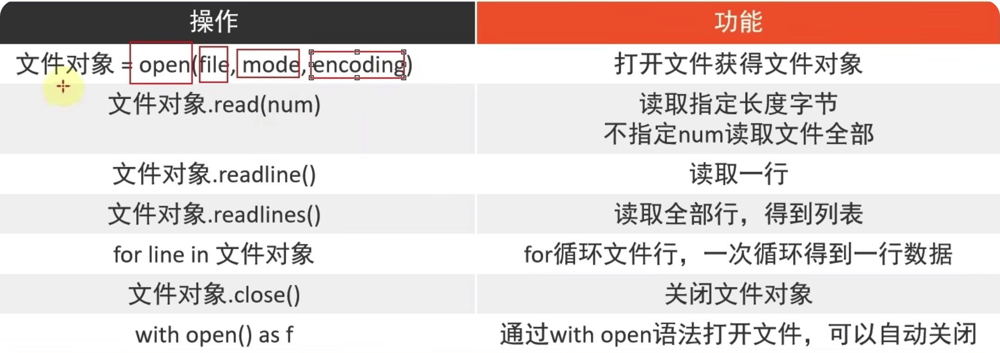
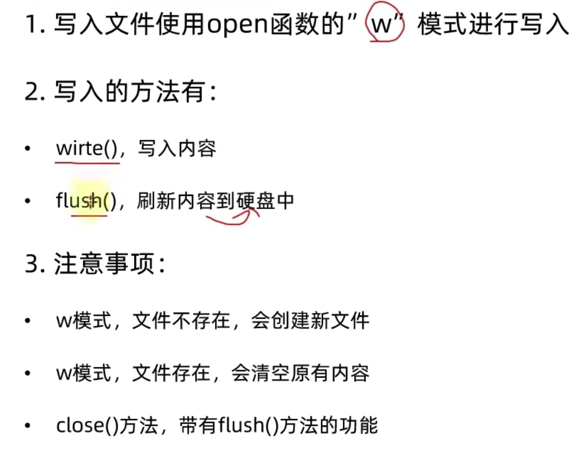

1.文件的读取和写入
# 打开文件
f=open("/Users/cengxianming/Desktop/python-idle/python第一章/第一章（1）/1.type使用.py","r",encoding="UTF-8")
# line=f.read(20)
#print(line) 读取前20个字节
#print(f.read()) 读取全部字节 输出类型为io-文件
# lines=f.readlines()# 读取文件的全部行，并封装到列表
# print(lines) #输出为列表
# 输出单行列表
# lines1=f.readline()
#print(lines1) #只输出一行，且输出为列表
# for循环读取文件
for x in f:
print(f"每一回数据{x}") #这个为单行单行的读
f.close()# 如果不关闭，此文件将一直被占用
#with open() 带有自动关闭功能
with open("/Users/cengxianming/Desktop/python-idle/python第一章/第一章（1）/1.type使用.py","r",encoding="UTF-8") as lin:
for y in lin:
print(y)

2.判断单词出现累计
f=open("python第一章/第一章（1）/1.type使用.py","r",encoding="UTF-8")
# 全部读取
#num=f.read()
#print(num.count("n"))
# 5
# 一行一行读取
nun1=0
for x in f:
x=x.strip() # 直接调用本身，去除里面的前后空格和换行符
y=x.strip("")# 将每个单词用空格分隔开，在匹配
print(y)
for z in y :
if z=="t":# 问题：这里只能索引单个字符
nun1+=1
print(f"print出现{nun1}次")
f.close()
3.文件的写入操作
f=open("python第一章/第一章（7）/1.txt","w",encoding="UTF-8")
f.write("hello world")# 清空文件内的内容，然后添加对应字段，如果对应路径没有此文件，会自动创建文件
f.flush()# 刷新文件内容
f.close()# 档close存在时，flush可以不写，close运行自动刷新

4.文件的追加操作
f=open("python第一章/第一章（7）/1.txt","a",encoding="UTF-8")
f.write("I like you") # 这种方式也是写入文件，不会改变原文件内容，在原文件最后加入对应字符
f.flush()
# 换行追加
f.write("\n蓝幽")
f.close
5.文件操作练习案例
"""
open和r模式打开一个文件对象，并读取文件
open和w模式打开另-个文件对象，用于文件写出
for循环内容，判断是否是测试不是测试就write写出，是测试就continue跳过
将2个文件对象均close (
"""
# 打开文件名读取
fr=open("python第一章/第一章（7）/2.txt","r",encoding="UTF-8")
# 打开文件写入
fw=open("python第一章/第一章（7）/3.txt","w",encoding="UTF-8")
# 循环读取文件
for x in fr:
x=x.strip()
if x.split(",")[4]=="测试":# split分割后变为列表
continue
fw.write(x)
fw.write("\n")
fr.close()
fw.close()